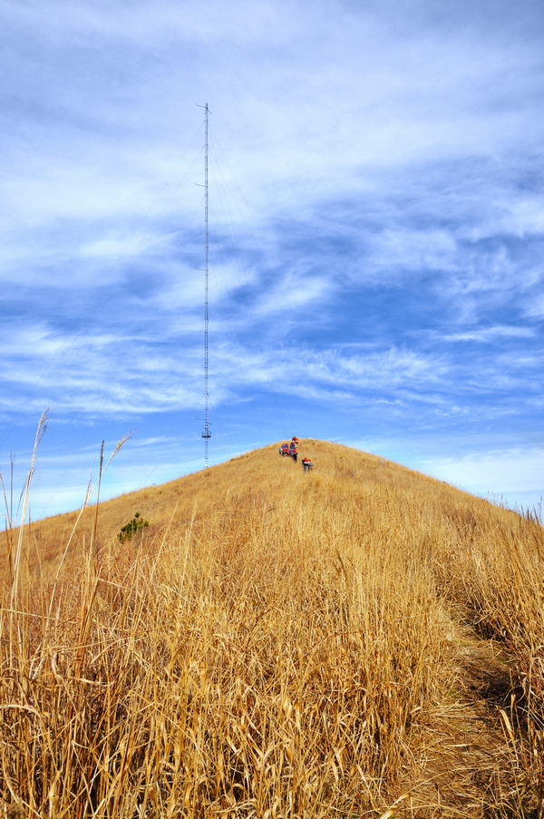

发信人: wayneleaf (大熊家的葉小宝｜喜欢上海的理由), 信区: outdoor
标 题: 【合集】昱岭关杂记——DongAo
发信站: 饮水思源 (2013年03月05日10:09:45 星期二), 站内信件
☆──────────────────────────────────────☆
FancyYou (DongAo) 于 2012年12月15日15:35:00 星期六)
提到：
[综述]
有难度，有美景，激动人心，冷
[小组]
我们组有SX和YZH，他们单独开火
雪哥，组长LiQiao，ChenHaoTian，我
我又被认作大一的...
[装备]
团购一堆，迪卡侬从上到下一套
冲锋衣不错，是迪卡侬透气最好的，好看，现在5折250元
鞋还行，V底，非GTX
袜子不好，脚腕和脚底磨惨了
团购的包、垫、杖、灯都不错
睡袋太坑爹了，重，大，不保暖！以后还是羽绒吧
[第一天]
按照惯例，第一天早上状态很差
不习惯早起，没睡好，冷，走得很吃力
越到后来状态越好
可能蹭了很多吃的，而且SX把上升节奏控制得不错
我徒步搓，心肺功能还不错，辛苦但不疲劳
可是脚惨啊，第一天是脚腕被磨了一圈血印
那个地方皮嫩啊，所以每一步都痛
贴了一圈创可贴，裤腿塞进去，缓解了些
第一天有比较虐的上升，有林间辟路的刺激下降
有金黄的山头，有砸向山尖的夕阳
有与时间赛跑的斥候，带我们寻营地
有爬树的二逼刚
总之还是很丰富的
[营地]
我们煮的面，太特么难吃了
我吃了超多
还是没吃饱啊，SX又给了我一大坨饭，上面黄黄的
还是没吃饱啊，SX又给了我一份汤，有虾有蛤蜊
还是没吃饱啊，又去小刚组吃了一大坨面
差不多了吧
然后喝了点威士忌，沉醉在星空里
[美景]
这次是带了相机的，想了想，没带三脚架，背不动
白天相机只拿出来一次，行走节奏还是很紧的
很多美景都没空看，因为要盯着脚下，认真走路
但是最美的那些，都映到心里去了
满山金黄，林尖残阳
朝霞溢粉，银河长长
白天最美的，还是那山间的一队人
如果山是有生命的，她都不忍心抖抖身子，把这群小生命撵走
 screen.width - 200){this.width = screen.width - 200}">
晚上最美的，当然是漫天繁星啦
我冻得浑身发抖
但是抬头看着星空，整个人就平静了
低下头又发抖
抬头又不抖了
真特么神奇
希哥把北斗指给我看
没看到
不过这都无所谓，即使我一颗星星都不认识，能盯着它们就很开心了
[第二天]
早饭还是吃面
这次没加调料，味道好了一点
太阳出来前的营地真是冷啊，被风吹得冻出翔了
第二天的路吧，最大的映像还是下降好多
还是连续的长时间下降，所以大腿肌肉特别酸
没戴护膝，好在一直在注意用肌肉，膝盖没啥问题，不过脚磨得越发惨了
千亩田的芦苇爽爆了啊，又是拍照的绝佳景致啊
不过没停留，不好拿相机，索性脑拍之
最后一个小时，有点坚持不住了，因为脚实在磨得不行了
即便是好走的平路，也越来越慢，渐渐落到后面
后来上了公路，不太磨脚，就又复活了，飞快蹭到终点，完毕。
[后续]
午饭吃的实在太香了╮(╯▽╰)╭
晚上继续腐败，有人一回学校就收到了爱の姜汤
然后被我们分刮了
我们进山
我们出山
什么都没留下
什么都没带走
除了回忆
☆──────────────────────────────────────☆
billyxs (into the wild) 于 2012年12月15日15:54:03 星期六)
提到：
大赞蛤蛤蛤！
【 在 FancyYou 的大作中提到: 】
: [综述]
: 有难度，有美景，激动人心，冷
: [小组]
: 我们组有SX和YZH，他们单独开火
: 雪哥，组长LiQiao，ChenHaoTian，我
: 我又被认作大一的...
: [装备]
: 团购一堆，迪卡侬从上到下一套
: 冲锋衣不错，是迪卡侬透气最好的，好看，现在5折250元
: 鞋还行，V底，非GTX
: 袜子不好，脚腕和脚底磨惨了
: 团购的包、垫、杖、灯都不错
: 睡袋太坑爹了，重，大，不保暖！以后还是羽绒吧
: [第一天]
: 按照惯例，第一天早上状态很差
: 不习惯早起，没睡好，冷，走得很吃力
: 越到后来状态越好
: 可能蹭了很多吃的，而且SX把上升节奏控制得不错
: 我徒步搓，心肺功能还不错，辛苦但不疲劳
: 可是脚惨啊，第一天是脚腕被磨了一圈血印
: (以下引言省略...)
☆──────────────────────────────────────☆
icermoon (icer 雨神) 于 2012年12月15日15:57:59 星期六)
提到：
这个蛤蛤蛤不错啊
【 在 billyxs 的大作中提到: 】
: 大赞蛤蛤蛤！
: (以下引言省略...)
☆──────────────────────────────────────☆
yanhao (一个人…) 于 2012年12月15日16:20:01 星期六)
提到：
走公路不应该最痛苦么。。。
【 在 FancyYou 的大作中提到: 】
: [综述]
: 有难度，有美景，激动人心，冷
: [小组]
: 我们组有SX和YZH，他们单独开火
: 雪哥，组长LiQiao，ChenHaoTian，我
: 我又被认作大一的...
: [装备]
: 团购一堆，迪卡侬从上到下一套
: 冲锋衣不错，是迪卡侬透气最好的，好看，现在5折250元
: 鞋还行，V底，非GTX
: 袜子不好，脚腕和脚底磨惨了
: 团购的包、垫、杖、灯都不错
: 睡袋太坑爹了，重，大，不保暖！以后还是羽绒吧
: [第一天]
: 按照惯例，第一天早上状态很差
: 不习惯早起，没睡好，冷，走得很吃力
: 越到后来状态越好
: 可能蹭了很多吃的，而且SX把上升节奏控制得不错
: 我徒步搓，心肺功能还不错，辛苦但不疲劳
: 可是脚惨啊，第一天是脚腕被磨了一圈血印
: (以下引言省略...)
☆──────────────────────────────────────☆
FancyYou (DongAo) 于 2012年12月15日16:25:16 星期六)
提到：
我是脚磨了，走稳一点的路舒服
【 在 yanhao 的大作中提到: 】
: 走公路不应该最痛苦么。。。
: (以下引言省略...)
☆──────────────────────────────────────☆
wzdxt (Enter nickname) 于 2012年12月15日16:26:39 星期六)
提到：
我也觉得那段特痛苦 还有之前那段土路 让我想起了那天的40km。。
还有 我也没认出哪颗是北斗。。。
【 在 yanhao 的大作中提到: 】
: 走公路不应该最痛苦么。。。
: (以下引言省略...)
☆──────────────────────────────────────☆
yanhao (一个人…) 于 2012年12月15日17:00:10 星期六)
提到：
那不是脚底板磨到吧。
要是脚底板磨到，走水泥硬路，是件相当痛苦的事。。。
【 在 FancyYou 的大作中提到: 】
: 我是脚磨了，走稳一点的路舒服
☆──────────────────────────────────────☆
yanhao (一个人…) 于 2012年12月15日17:01:18 星期六)
提到：
同没看到。。
但是其他星星都好亮啊！虽然不认识，也就不关心北斗了。。。
【 在 wzdxt 的大作中提到: 】
: 我也觉得那段特痛苦 还有之前那段土路 让我想起了那天的40km。。
: 还有 我也没认出哪颗是北斗。。。
☆──────────────────────────────────────☆
cicicicy ( c) 于 2012年12月15日17:39:54 星期六)
提到：
你们两个挫货
北斗都不认识
【 在 wzdxt 的大作中提到: 】
: 我也觉得那段特痛苦 还有之前那段土路 让我想起了那天的40km。。
: 还有 我也没认出哪颗是北斗。。。
☆──────────────────────────────────────☆
cicicicy ( c) 于 2012年12月15日17:41:04 星期六)
提到：
同感
我是脚底板有一个水泡 破掉
走土路还好 软软的
最后那段路就走得很蛋疼
所以sx杀上来的时候我才跟着他冲出去的
【 在 yanhao 的大作中提到: 】
: 那不是脚底板磨到吧。
: 要是脚底板磨到，走水泥硬路，是件相当痛苦的事。。。
☆──────────────────────────────────────☆
yanhao (一个人…) 于 2012年12月15日17:53:38 星期六)
提到：
这不是没仔细去找吗。。
然后，每次找到北斗七星，就找不到北极星，囧。。。
【 在 cicicicy 的大作中提到: 】
: 你们两个挫货
: 北斗都不认识
☆──────────────────────────────────────☆
yangzihao (☺) 于 2012年12月15日19:41:19 星期六)
提到：
赞！
如果山是有生命的，她都不忍心抖抖身子，把这群小生命撵走
【 在 FancyYou 的大作中提到: 】
: [综述]
: 有难度，有美景，激动人心，冷
: [小组]
: 我们组有SX和YZH，他们单独开火
: 雪哥，组长LiQiao，ChenHaoTian，我
: 我又被认作大一的...
: [装备]
: 团购一堆，迪卡侬从上到下一套
: 冲锋衣不错，是迪卡侬透气最好的，好看，现在5折250元
: 鞋还行，V底，非GTX
: 袜子不好，脚腕和脚底磨惨了
: 团购的包、垫、杖、灯都不错
: 睡袋太坑爹了，重，大，不保暖！以后还是羽绒吧
: [第一天]
: 按照惯例，第一天早上状态很差
: 不习惯早起，没睡好，冷，走得很吃力
: 越到后来状态越好
: 可能蹭了很多吃的，而且SX把上升节奏控制得不错
: 我徒步搓，心肺功能还不错，辛苦但不疲劳
: 可是脚惨啊，第一天是脚腕被磨了一圈血印
: (以下引言省略...)
☆──────────────────────────────────────☆
cheche (旮旯旮旯旮旯) 于 2012年12月15日23:28:45 星期六)
提到：
我就说蛤蛤蛤好吃吧！
【 在 icermoon 的大作中提到: 】
: 这个蛤蛤蛤不错啊
☆──────────────────────────────────────☆
cheche (旮旯旮旯旮旯) 于 2012年12月15日23:29:08 星期六)
提到：
不错这个大一小学弟还是挺文艺的
【 在 FancyYou 的大作中提到: 】
: [综述]
: 有难度，有美景，激动人心，冷
: [小组]
: 我们组有SX和YZH，他们单独开火
: 雪哥，组长LiQiao，ChenHaoTian，我
: 我又被认作大一的...
: [装备]
: 团购一堆，迪卡侬从上到下一套
: 冲锋衣不错，是迪卡侬透气最好的，好看，现在5折250元
: 鞋还行，V底，非GTX
: 袜子不好，脚腕和脚底磨惨了
: 团购的包、垫、杖、灯都不错
: 睡袋太坑爹了，重，大，不保暖！以后还是羽绒吧
: [第一天]
: 按照惯例，第一天早上状态很差
: 不习惯早起，没睡好，冷，走得很吃力
: 越到后来状态越好
: 可能蹭了很多吃的，而且SX把上升节奏控制得不错
: 我徒步搓，心肺功能还不错，辛苦但不疲劳
: 可是脚惨啊，第一天是脚腕被磨了一圈血印
: (以下引言省略...)
☆──────────────────────────────────────☆
FancyYou (DongAo) 于 2012年12月16日19:51:53 星期天)
提到：
多谢学姐夸奖。。。
【 在 cheche 的大作中提到: 】
: 不错这个大一小学弟还是挺文艺的
: (以下引言省略...)
☆──────────────────────────────────────☆
wxmhz (东临碣石) 于 2013年02月10日19:56:08 星期天)
提到：
k，咋不来几张星空图阿
【 在 FancyYou 的大作中提到: 】
: [综述]
: 有难度，有美景，激动人心，冷
: [小组]
: 我们组有SX和YZH，他们单独开火
: 雪哥，组长LiQiao，ChenHaoTian，我
: 我又被认作大一的...
: [装备]
: 团购一堆，迪卡侬从上到下一套
: 冲锋衣不错，是迪卡侬透气最好的，好看，现在5折250元
: 鞋还行，V底，非GTX
: 袜子不好，脚腕和脚底磨惨了
: 团购的包、垫、杖、灯都不错
: 睡袋太坑爹了，重，大，不保暖！以后还是羽绒吧
: [第一天]
: 按照惯例，第一天早上状态很差
: 不习惯早起，没睡好，冷，走得很吃力
: 越到后来状态越好
: 可能蹭了很多吃的，而且SX把上升节奏控制得不错
: 我徒步搓，心肺功能还不错，辛苦但不疲劳
: 可是脚惨啊，第一天是脚腕被磨了一圈血印
: (以下引言省略...)
|